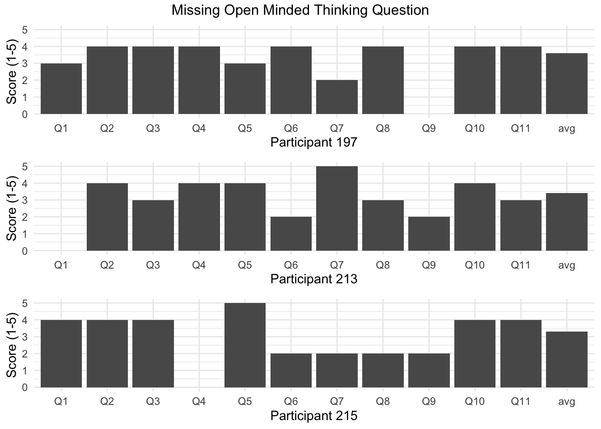

Chapter 3 Data
3.1 Sources
Data used in this project was originally collected by a team based in California State University San Marcos, and led by Dr. Dustin Calvillo. A visit to his Google Scholar profile indicates that his recent research has focused on employing quantitative methods from cognitive psychology to the study of contemporary communication phenomena, especially mis- and disinformation.
This specific data set – the fake news and confirmation bias – is part of the Confirmation bias in fact checking political claims research project. There is a similar dataset in the same project, which is apparently a previous version of the one used in this project (suffixes x1 and x2, respectively. Although both datasets share the same variables, a few are present in one and not in the other. For example, “disconfirm_bias” is present in x1, but not in x2; the opposite is true for “ideology” and “condition” (referring to “fact-checking conditions”). More clarification was requested via email to the principal investigator, but we are assuming that x2 is a more refined version of x1, so we opted to use the former for our analysis.
The dataset has 247 observations of 53 variables, all of which are “double.” However, the data dictionary indicates that many of those represent other types of data and have possibly been transformed by the authors before publishing the data set. For example, the variable pol_party originally has values “Democrat” and “Repubican,” which are now represented by 1 and 2, respectively; gender originally accepted values “female,” “male,” “other,” and “decline to state,” and now are coded from 1 to 4, in that order. Others are originally integers, for example, t_concordant, which represents “total number f fact-checks for true politically concordant headlines.” The same is true for the Likert-type scale variable ideology, whose rating ranges from 1 to 7, “from extremely liberal to extremely conservative.” A third class that was present in the original dataset was “time,” the case, for example, of T_dem_rt (“mean reading time for true pro-liberal headlines”). Lastly, there are 2 variables that gorup other variables: CRT```` is the “total number of CRT items answered correctly” (0-6); andAOT```, which is the mean of items in the “active open-minded thinking” (1-5).
One possible challenge that may arise as we start the exploratory data analysis is the transformation of time values form doubles to time and date format. In terms of missing values, although the data set seems to have been pre-processed in order to exclude NAs, there are 4 observations that contain missing values (1 NA each).
## [1] 247 53## tibble [247 × 53] (S3: tbl_df/tbl/data.frame)
## $ pol_party : dbl+lbl [1:247] 1, 1, 1, 1, 1, 1, 1, 1, 1, 1, 1, 1, 1, 1, 1, 1, 1, 1, 1, 1, 1, 1, 1, 1, 1, 1, 1, 1, 1, 1, 1, 1, 1, 1, 1, 1, 1, 1, 1, 1, 1, 1, 1, 1, 1, 1, 1, 1, 1, 1, 1, 1, 1, 1, 1, 1, 1, 1, 1, 1, 1, 1...
## ..@ format.spss: chr "F8.2"
## ..@ labels : Named num [1:2] 1 2
## .. ..- attr(*, "names")= chr [1:2] "democrat" "republican"
## $ condition : dbl+lbl [1:247] 1, 1, 1, 1, 1, 1, 1, 1, 1, 1, 1, 1, 1, 1, 1, 1, 1, 1, 1, 1, 1, 1, 1, 1, 1, 1, 1, 1, 1, 1, 1, 1, 1, 1, 1, 1, 1, 1, 1, 1, 1, 1, 1, 1, 1, 1, 1, 1, 1, 1, 1, 1, 1, 1, 1, 1, 1, 1, 1, 1, 1, 1...
## ..@ format.spss: chr "F8.2"
## ..@ labels : Named num [1:2] 1 2
## .. ..- attr(*, "names")= chr [1:2] "easy" "difficult"
## $ t_concordant : num [1:247] 0 3 6 5 3 6 5 6 5 6 ...
## ..- attr(*, "format.spss")= chr "F8.2"
## $ f_concordant : num [1:247] 3 4 6 5 1 6 5 5 6 6 ...
## ..- attr(*, "format.spss")= chr "F8.2"
## $ t_discordant : num [1:247] 1 2 6 6 1 5 6 3 6 2 ...
## ..- attr(*, "format.spss")= chr "F8.2"
## $ f_discordant : num [1:247] 0 3 6 6 5 5 5 2 6 5 ...
## ..- attr(*, "format.spss")= chr "F8.2"
## $ age : num [1:247] 34 66 57 25 26 54 30 41 46 27 ...
## ..- attr(*, "format.spss")= chr "F8.2"
## $ gender : dbl+lbl [1:247] 1, 2, 1, 2, 1, 1, 1, 1, 2, 1, 1, 1, 1, 1, 2, 1, 1, 1, 1, 1, 1, 1, 1, 1, 1, 1, 1, 1, 2, 2, 1, 1, 2, 1, 1, 1, 2, 2, 2, 1, 1, 2, 1, 1, 1, 1, 2, 2, 1, 1, 2, 2, 1, 1, 1, 1, 1, 1, 1, 1, 1, 1...
## ..@ format.spss: chr "F8.2"
## ..@ labels : Named num [1:4] 1 2 3 4
## .. ..- attr(*, "names")= chr [1:4] "female" "male" "other" "decline"
## $ ideology : num [1:247] 2 1 3 2 2 2 3 1 3 2 ...
## ..- attr(*, "format.spss")= chr "F8.2"
## $ CRT : num [1:247] 4 6 4 2 6 6 6 5 3 2 ...
## ..- attr(*, "format.spss")= chr "F8.2"
## $ AOT : num [1:247] 3.64 4.73 4.18 4.18 4.27 ...
## ..- attr(*, "format.spss")= chr "F8.2"
## $ confirmation_bias : num [1:247] 2 2 0 -2 -2 2 -1 6 -1 5 ...
## ..- attr(*, "format.spss")= chr "F8.2"
## ..- attr(*, "display_width")= int 19
## $ T_dem_rt : num [1:247] 2.03 3.98 2.56 6.09 1.36 ...
## ..- attr(*, "format.spss")= chr "F8.2"
## $ F_dem_rt : num [1:247] 4.46 5.12 4.32 5.17 0.9 ...
## ..- attr(*, "format.spss")= chr "F8.2"
## $ T_rep_rt : num [1:247] 5.27 5.05 5.7 6.53 1.72 ...
## ..- attr(*, "format.spss")= chr "F8.2"
## $ F_rep_rt : num [1:247] 2.69 4.14 1.86 8.39 1.64 ...
## ..- attr(*, "format.spss")= chr "F8.2"
## $ t_concordant_rt : num [1:247] 2.03 3.98 2.56 6.09 1.36 ...
## ..- attr(*, "format.spss")= chr "F8.2"
## ..- attr(*, "display_width")= int 17
## $ f_concordant_rt : num [1:247] 4.46 5.12 4.32 5.17 0.9 ...
## ..- attr(*, "format.spss")= chr "F8.2"
## ..- attr(*, "display_width")= int 17
## $ t_discordant_rt : num [1:247] 5.27 5.05 5.7 6.53 1.72 ...
## ..- attr(*, "format.spss")= chr "F8.2"
## ..- attr(*, "display_width")= int 17
## $ f_discordant_rt : num [1:247] 2.69 4.14 1.86 8.39 1.64 ...
## ..- attr(*, "format.spss")= chr "F8.2"
## ..- attr(*, "display_width")= int 17
## $ crt1 : num [1:247] 0 1 0 0 1 1 1 0 0 0 ...
## ..- attr(*, "format.spss")= chr "F8.2"
## $ crt2 : num [1:247] 1 1 0 0 1 1 1 1 0 0 ...
## ..- attr(*, "format.spss")= chr "F8.2"
## $ crt3 : num [1:247] 0 1 1 1 1 1 1 1 0 0 ...
## ..- attr(*, "format.spss")= chr "F8.2"
## $ crt4 : num [1:247] 1 1 1 0 1 1 1 1 1 0 ...
## ..- attr(*, "format.spss")= chr "F8.2"
## $ crt5 : num [1:247] 1 1 1 1 1 1 1 1 1 1 ...
## ..- attr(*, "format.spss")= chr "F8.2"
## $ crt6 : num [1:247] 1 1 1 0 1 1 1 1 1 1 ...
## ..- attr(*, "format.spss")= chr "F8.2"
## $ aot01 : num [1:247] 4 5 4 5 4 5 4 3 4 3 ...
## ..- attr(*, "format.spss")= chr "F8.2"
## $ aot02 : num [1:247] 4 5 5 5 5 5 4 5 4 5 ...
## ..- attr(*, "format.spss")= chr "F8.2"
## $ aot03 : num [1:247] 2 5 5 1 4 5 4 4 4 5 ...
## ..- attr(*, "format.spss")= chr "F8.2"
## $ aot04 : num [1:247] 4 5 5 4 5 5 4 4 3 5 ...
## ..- attr(*, "format.spss")= chr "F8.2"
## $ aot05 : num [1:247] 4 5 5 5 5 5 5 5 5 5 ...
## ..- attr(*, "format.spss")= chr "F8.2"
## $ aot06 : num [1:247] 4 5 5 5 4 4 3 4 4 5 ...
## ..- attr(*, "format.spss")= chr "F8.2"
## $ aot07 : num [1:247] 4 5 4 5 4 5 4 5 5 1 ...
## ..- attr(*, "format.spss")= chr "F8.2"
## $ aot08 : num [1:247] 4 5 2 5 4 5 5 5 4 5 ...
## ..- attr(*, "format.spss")= chr "F8.2"
## $ aot09 : num [1:247] 4 3 2 5 4 3 3 2 3 5 ...
## ..- attr(*, "format.spss")= chr "F8.2"
## $ aot10 : num [1:247] 3 5 5 2 4 3 2 4 3 2 ...
## ..- attr(*, "format.spss")= chr "F8.2"
## $ aot11 : num [1:247] 4 5 5 5 5 4 4 5 5 5 ...
## ..- attr(*, "format.spss")= chr "F8.2"
## $ fc_att1 : num [1:247] 5 6 6 7 6 7 5 6 5 3 ...
## ..- attr(*, "format.spss")= chr "F8.2"
## $ fc_att2 : num [1:247] 4 6 6 6 6 6 5 6 4 4 ...
## ..- attr(*, "format.spss")= chr "F8.2"
## $ fc_att3 : num [1:247] NA 6 6 7 6 7 5 6 5 1 ...
## ..- attr(*, "format.spss")= chr "F8.2"
## $ fact_check_att : num [1:247] 4.5 6 6 6.67 6 ...
## ..- attr(*, "format.spss")= chr "F8.2"
## ..- attr(*, "display_width")= int 16
## $ total_fact_checks : num [1:247] 4 12 24 22 10 22 21 16 23 19 ...
## ..- attr(*, "format.spss")= chr "F8.2"
## ..- attr(*, "display_width")= int 19
## $ concordant_rt : num [1:247] 3.24 4.55 3.44 5.63 1.13 ...
## ..- attr(*, "format.spss")= chr "F8.2"
## ..- attr(*, "display_width")= int 15
## $ discordant_rt : num [1:247] 3.98 4.59 3.78 7.46 1.68 ...
## ..- attr(*, "format.spss")= chr "F8.2"
## ..- attr(*, "display_width")= int 15
## $ t_rt : num [1:247] 3.65 4.51 4.13 6.31 1.54 ...
## ..- attr(*, "format.spss")= chr "F8.2"
## ..- attr(*, "display_width")= int 10
## $ f_rt : num [1:247] 3.57 4.63 3.09 6.78 1.27 ...
## ..- attr(*, "format.spss")= chr "F8.2"
## ..- attr(*, "display_width")= int 10
## $ filter_$ : dbl+lbl [1:247] 0, 0, 0, 0, 0, 0, 0, 0, 0, 0, 0, 0, 0, 0, 0, 0, 0, 0, 0, 0, 0, 0, 0, 0, 0, 0, 0, 0, 0, 0, 0, 0, 0, 0, 0, 0, 0, 0, 0, 0, 0, 0, 0, 0, 0, 0, 0, 0, 0, 0, 0, 0, 0, 0, 0, 0, 0, 0, 0, 0, 0, 0...
## ..@ label : chr "condition=2 (FILTER)"
## ..@ format.spss : chr "F1.0"
## ..@ display_width: int 10
## ..@ labels : Named num [1:2] 0 1
## .. ..- attr(*, "names")= chr [1:2] "Not Selected" "Selected"
## $ overall_rt : num [1:247] 3.61 4.57 3.61 6.54 1.41 ...
## ..- attr(*, "format.spss")= chr "F8.2"
## ..- attr(*, "display_width")= int 12
## $ overall_fact_checks: num [1:247] 1 3 6 5.5 2.5 5.5 5.25 4 5.75 4.75 ...
## ..- attr(*, "format.spss")= chr "F8.2"
## ..- attr(*, "display_width")= int 21
## $ m_concordant_fc : num [1:247] 1.5 3.5 6 5 2 6 5 5.5 5.5 6 ...
## ..- attr(*, "format.spss")= chr "F8.2"
## ..- attr(*, "display_width")= int 17
## $ m_discordant_fc : num [1:247] 0.5 2.5 6 6 3 5 5.5 2.5 6 3.5 ...
## ..- attr(*, "format.spss")= chr "F8.2"
## ..- attr(*, "display_width")= int 17
## $ m_true_fc : num [1:247] 0.5 2.5 6 5.5 2 5.5 5.5 4.5 5.5 4 ...
## ..- attr(*, "format.spss")= chr "F8.2"
## ..- attr(*, "display_width")= int 11
## $ m_false_fc : num [1:247] 1.5 3.5 6 5.5 3 5.5 5 3.5 6 5.5 ...
## ..- attr(*, "format.spss")= chr "F8.2"
## ..- attr(*, "display_width")= int 12## variable class
## pol_party pol_party double
## condition condition double
## t_concordant t_concordant double
## f_concordant f_concordant double
## t_discordant t_discordant double
## f_discordant f_discordant double
## age age double
## gender gender double
## ideology ideology double
## CRT CRT double
## AOT AOT double
## confirmation_bias confirmation_bias double
## T_dem_rt T_dem_rt double
## F_dem_rt F_dem_rt double
## T_rep_rt T_rep_rt double
## F_rep_rt F_rep_rt double
## t_concordant_rt t_concordant_rt double
## f_concordant_rt f_concordant_rt double
## t_discordant_rt t_discordant_rt double
## f_discordant_rt f_discordant_rt double
## crt1 crt1 double
## crt2 crt2 double
## crt3 crt3 double
## crt4 crt4 double
## crt5 crt5 double
## crt6 crt6 double
## aot01 aot01 double
## aot02 aot02 double
## aot03 aot03 double
## aot04 aot04 double
## aot05 aot05 double
## aot06 aot06 double
## aot07 aot07 double
## aot08 aot08 double
## aot09 aot09 double
## aot10 aot10 double
## aot11 aot11 double
## fc_att1 fc_att1 double
## fc_att2 fc_att2 double
## fc_att3 fc_att3 double
## fact_check_att fact_check_att double
## total_fact_checks total_fact_checks double
## concordant_rt concordant_rt double
## discordant_rt discordant_rt double
## t_rt t_rt double
## f_rt f_rt double
## filter_$ filter_$ double
## overall_rt overall_rt double
## overall_fact_checks overall_fact_checks double
## m_concordant_fc m_concordant_fc double
## m_discordant_fc m_discordant_fc double
## m_true_fc m_true_fc double
## m_false_fc m_false_fc double##
## age AOT aot01 aot02 aot03 aot04 aot05 aot06 aot07 aot08
## 1 1 1 1 1 1 1 1 1 1
## aot09 aot10 aot11 concordant_rt condition confirmation_bias CRT crt1 crt2 crt3
## 1 1 1 1 1 1 1 1 1 1
## crt4 crt5 crt6 discordant_rt f_concordant f_concordant_rt F_dem_rt f_discordant f_discordant_rt F_rep_rt
## 1 1 1 1 1 1 1 1 1 1
## f_rt fact_check_att fc_att1 fc_att2 fc_att3 filter_$ gender ideology m_concordant_fc m_discordant_fc
## 1 1 1 1 1 1 1 1 1 1
## m_false_fc m_true_fc overall_fact_checks overall_rt pol_party t_concordant t_concordant_rt T_dem_rt t_discordant t_discordant_rt
## 1 1 1 1 1 1 1 1 1 1
## T_rep_rt t_rt total_fact_checks
## 1 1 13.2 Cleaning / transformation
First, the data set is loaded in using the package Haven’s read_sav() function, as the data is stored as a .SAV file. This type of file is outputted by the application SPSS. It is then converted to a data frame for easier use. The authors of this study clearly spent time preparing their data for publishing and little transformation was needed. Upon examination, there are many categorical variables which have already been modified to be numeric, ordinal variables. However, they are still numeric and plotting in ggplot2 often requires ordinal variables to be in factor form. As such, many columns will need to be converted to factors. This is done with a custom function factor_converter() which takes columns and a data set as a inputs and creates factor level variables, including an NA factor. One option to explore is modifying some of these ordinal variables to be binary, as using ordinal scale on data that shouldn’t be ranked can obscure true relationships. Given this data relates to individual participants and their responses in the study, a new variable participant_id has been added to the data set to uniquely identify each participant. This allowed us to track whether any anomalies were related to specific individuals. For now, this allows us to move straight into exploratory data analysis.
3.3 Missing value analysis
The authors mention that missing values have been removed prior to the data being made publicly available. However, there do seem to be a few missing observations present in the data.

After finding and selecting all columns that have missing values, we show below only the participants and columns that contained missing values to see if any were in common:
## participant_id aot01 aot04 aot09 fc_att3
## 1 1 4 4 4 NA
## 2 197 3 4 NA 3
## 3 213 NA 4 2 5
## 4 215 4 NA 2 3Now we look to investigate whether there were any similarities among these four participants:
## # A tibble: 4 × 11
## participant_id aot01 aot04 aot09 fc_att3 gender pol_party ideology condition age AOT
## <int> <dbl> <dbl> <dbl> <dbl> <dbl+lbl> <dbl+lbl> <dbl> <dbl+lbl> <dbl> <dbl>
## 1 1 4 4 4 NA 1 [female] 1 [democrat] 2 1 [easy] 34 3.64
## 2 197 3 4 NA 3 1 [female] 2 [republican] 7 2 [difficult] 69 3.6
## 3 213 NA 4 2 5 2 [male] 2 [republican] 5 2 [difficult] 26 3.4
## 4 215 4 NA 2 3 1 [female] 2 [republican] 7 2 [difficult] 77 3.3Variables:
AOT: mean rating for 11 actively open-minding thinking questions (possible range of 1-5)
fact_check_att: mean rating for three attitude toward fact-checkers questions (possible range of 1-7)
fc_att3: response to the third item on the attitudes toward fact-checkers scale
aot01: response to the first item on the actively open-minded thinking scale (1-5)
aot04: response to the fourth item on the actively open-minded thinking scale (1-5)
aot09: response to the nineth item on the actively open-minded thinking scale (1-5)
There seems to be little in common among the four participants on first glance. However, all four score roughly a 3.5 on the AOT mean rating for 11 actively open minded thinking questions. Considering the scale goes up to only five, this means these participants were on the higher end in terms of their willingness to explore alternate ways of thinking. Considering aot01, aot04, and aot09 are all scores for questions intended to judge a participants open minded thinking, one theory could be that these participants believed the question was neutral, it was outside of their realm of knowledge, or they just couldn’t think of black and white answer so they left it blank. But the fact that all three missing aot particpants are republican, with two having the highest ideology rating of seven meaning they are extremely conservative (participants 197 and 215), gives rise to a few theories of why this occurred. Perhaps a question was asked that disagreed with them morally, such as abortion or the death penalty. This may have led them to give no response to this question. This theory can better be confirmed by the fact that participant 215 was not very open minded in regards to the ninth question, aot09, and only scored a 2 out of 5. Participant 197 chose not to answer this question at all. Both also scored relatively low on questions intended to gauge the participants attitudes towards fact checkers, 2 and 3 out of 7, so maybe they felt uncomfortable sharing their views with the the proctor. Another idea could be that these three participants simply had a hard time answering these questions because the fact checking conditions were difficult (condition = 2). This ma have made them more guarded in terms of their willingness to answer these type of questions. As for participant 1, she is a democrat who is extremely liberal with an ideology score of 2, with one being extremely liberal and seven being extremely conservative. fc_att3 was one of the questions given to participants to gauge their attitudes toward fact checkers. Overall, participant 1 scored relatively high in terms of her attitude toward fact checkers, 4.3/7. So it seems that overall she felt positively about fact checkers, but maybe considering she’s extremely liberal, she didn’t feel that question was appropriate. All four are still valid participants to include in the study considering all other questions were answered, so it makes sense that the authors left them in.
